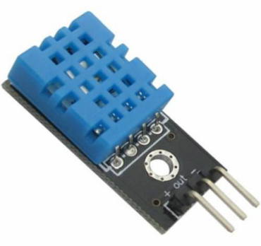
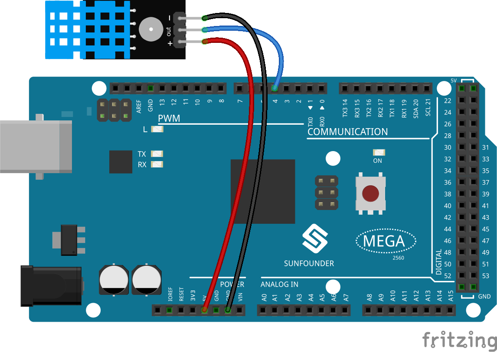

2.32 DHT11 Module¶
Overview¶
In this lesson, you will learn how to use DHT11 Module. The DHT11 is a basic, ultra low-cost digital temperature and humidity sensor. It uses a capacitive humidity sensor and a thermistor to measure the surrounding air, and spits out a digital signal on the data pin (no analog input pins are needed).
Components Required¶

Component Introduction¶
{kind=link}
Only three pins are available: VCC, GND, and DATA. The communication process begins with the DATA line sending start signals to DHT11, and DHT11 receives the signals and returns an answer signal. Then the host receives the answer signal and begins to receive 40-bit humiture data (8-bit humidity integer + 8-bit humidity decimal + 8-bit temperature integer + 8-bit temperature decimal + 8-bit checksum). For more information, please refer to DHT11 datasheet.
Fritzing Circuit¶
In this example, we can directly connect the pins of DHT11 Module to the pins of Mega 2560 Board, and we use pin 4 to read the signal of DHT11 Module. Connect the pin「+」of DHT11 Module to 5V, the pin「-」 to GND, and the pin OUT to pin 4.
{kind=link}
Wiring Diagram¶

Code¶
The codes use the library dht.h. About how to import library, please refer to 4.1 Add Libraries.
After the codes are uploaded to the Mega2560 board, the serial monitor will continue to output the current temperature and humidity values of the environment.
Code Analysis¶
The function of the module is included in the library dht.h.
#include <dht.h>
Library Functions：
dht
Creates a new instance of the dht class that represents a particular DHT-11 module attached to your Arduino board.
int read11(uint8_t pin)
This function will return CHECK values.
DHTLIB_OK means that DHT-11 is in good condition;
DHTLIB_ERROR_CHECKSUM represents that the value may be abnormal;
DHTLIB_ERROR_TIMEOUT indicates that there is timeout.
The function will store the detected humidity and temperature into the variables with the same name in dht class.
The function should be called and used directly in the main program. (e.g. Serial.println(DHT.temperature,1);)
Phenomenon Picture¶